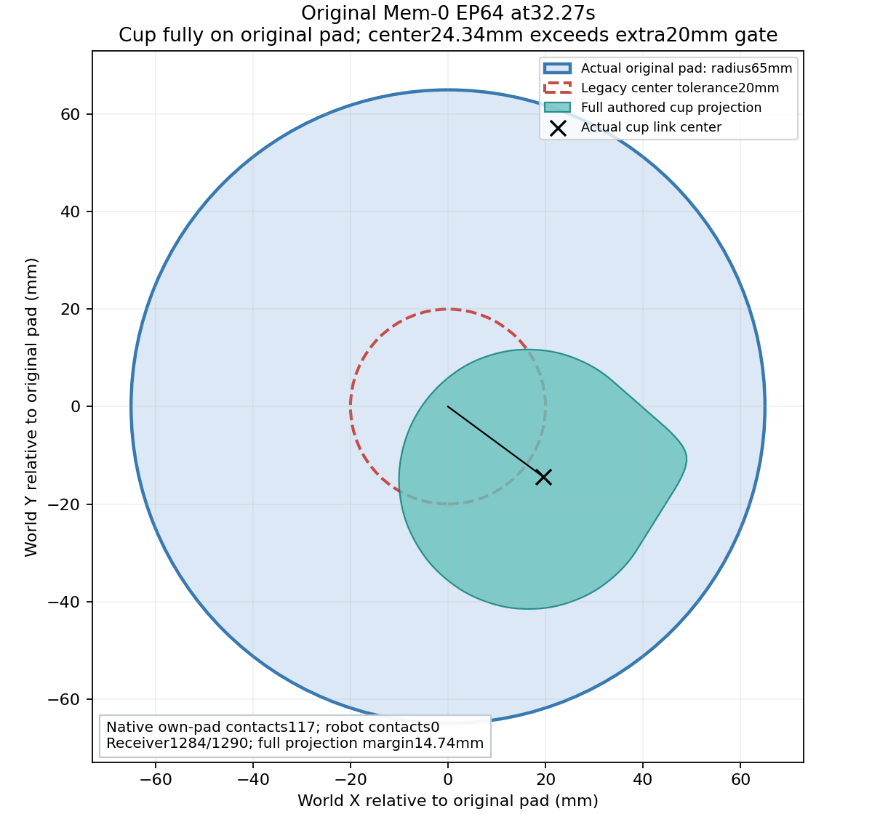
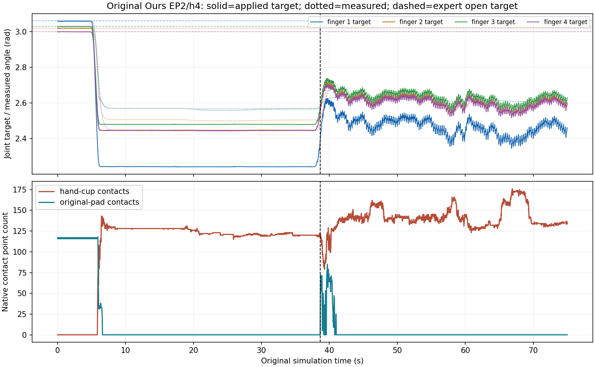
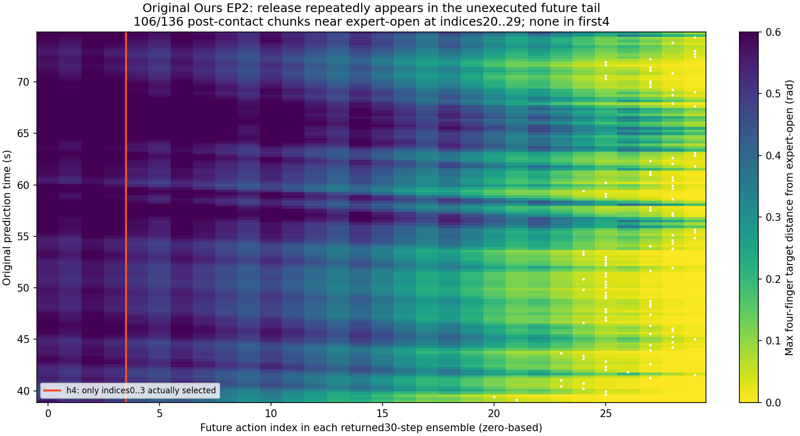
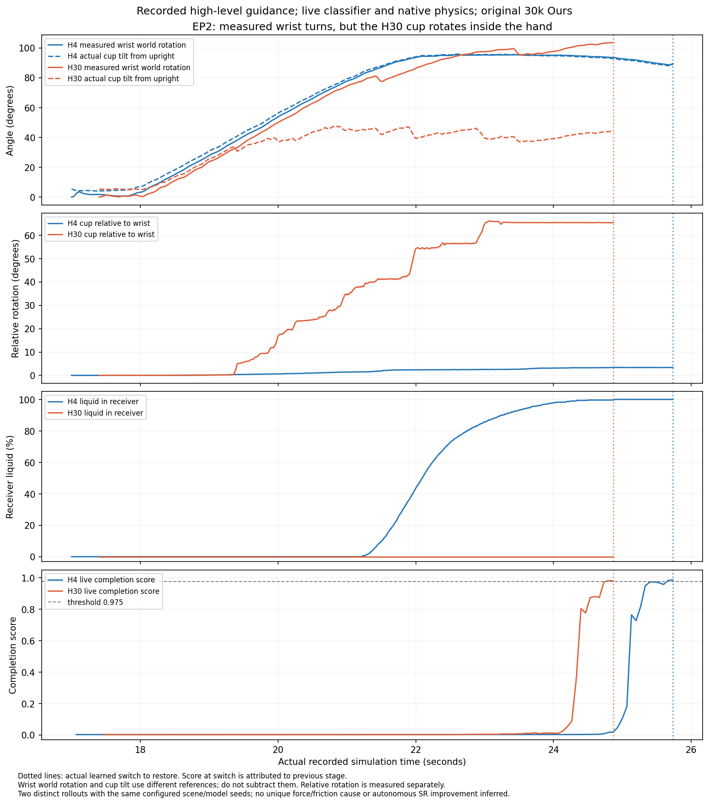
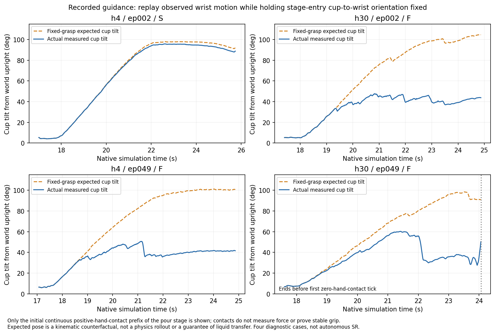
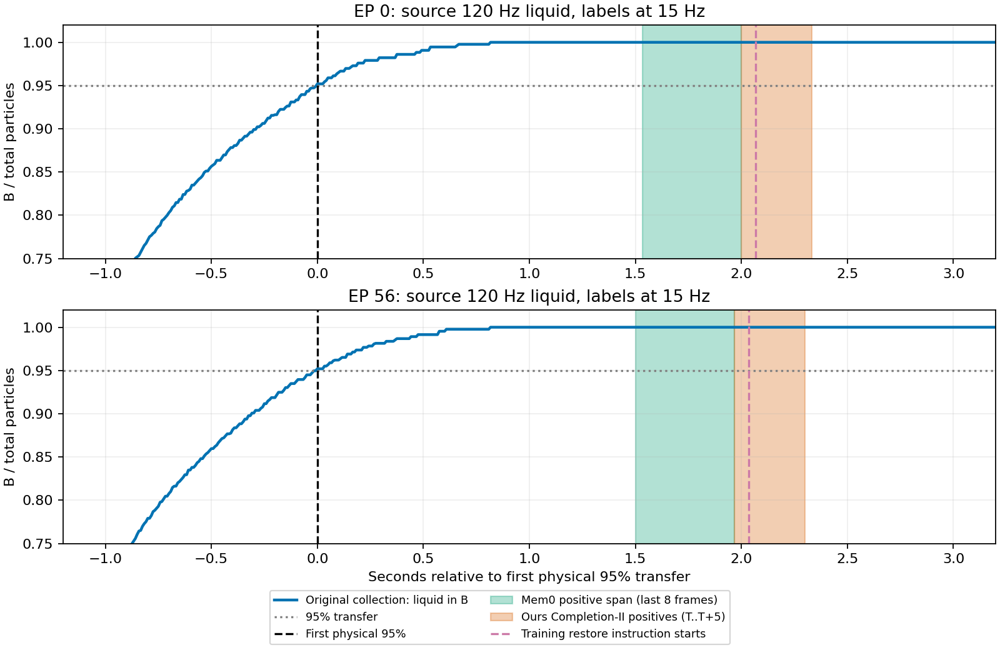
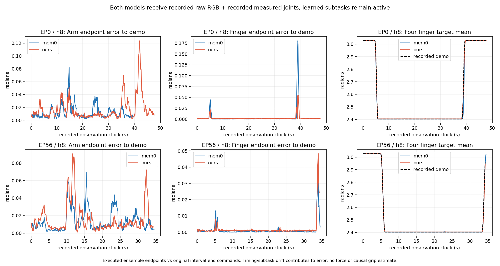
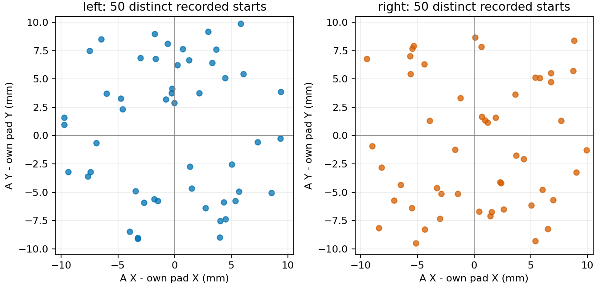

旧 Mem-0 EP64：已经放回，但超过额外居中门

32.27秒：原垫117个接触点、机器人接触为0，目标杯1284/1290粒液体；杯中心偏24.34毫米，但整个杯体投影距垫边还剩14.74毫米。原75秒超时标签没有被覆盖。
把你观察到的现象与真实终止日志分别列出。TTC 对应面板中的 Ours。
你粘贴的 latest 第三人称与 latest chest 两部分暂无案例正文，本页没有据此补造结论；占位图片也未被当作已读取证据。
点击“旧轨迹”或“SR新轨迹”，直接跳到该episode的双视频页，可持续查看完整子任务文字、真实选帧与终止日志。
| Episode / 视频 | Mem-0：你的观察 / 原始终止 | Ours（TTC）：你的观察 / 原始终止 | 独立SR重跑 |
|---|
完整32条来源映射 · EP64/65/73/76末帧量测及来源SHA · EP2原始释放审计摘要
Mem-0 EP65在45.13秒、EP73在46.20秒，因Planner输出缺少 next_subtask 前缀被拒绝；EP64、EP76则达到75秒超时。Ours EP1/5/6等原案例确实受旧版安全倾角提前停止影响。当前SR版本继续记录这些安全告警，但不因此提前终止。
Mem-0 EP64末帧杯中心与原垫中心相差24.36毫米，超过原20毫米位置条件；EP65、EP76角速度分别0.128、0.133弧度/秒，未满足旧版低于0.1的稳定条件。当前SR已移除角速度要求，但仍要求倒液、原垫接触、松手及放回位置。现已补取原始逐tick接触记录及各案例碰撞资产，具体同轨迹复核见下方；旧20毫米要求比完整放回原垫更严格。
原轨迹复核：EP65、73、76在原任务SR事件规则下已经完成；EP64在替换额外20毫米居中条件后，于32.27秒满足完整原垫几何与其他任务条件。旧版strict标签保持不变。它们另一次独立SR重跑也均成功，两类证据分别列出。
训练输入对照 EP0 / h8 / Ours 实时输入在23.958秒手杯接触持续归零，随后0.5秒杯中心下降97.6毫米、相对手腕移动119.4毫米。六指目标没有同期明显张开。接触点数不代表握力，当前日志尚不能直接区分摩擦、力不足与抓持几何。
旧EP2 / Ours 的已保存原始审计末帧仍有134个手杯接触点，手杯间隙为0；支持“松手没有完成”，不能仅凭接触点数判定穿模或固连。该条已完成倒液，停在放回释放阶段；原75秒超时结果保留。
同场景两种输入的预测动作在第一次抓杯之前已经分岔，首次接触时手腕位置相差约10.6毫米。它支持继续检查预测轨迹与抓持几何，但两次独立仿真的初始RGB并非逐像素相同，不能当作严格的“只改关节角”因果实验。查看原始曲线、实际相机帧与限定条件。
原200条Ours中，18条反复输出相同的放回指令，共252次；每次仍会递增阶段、重置阶段状态和动作chunk。隔离修复把Planner决策放在提交切换之前：同一指令继续当前阶段，真正的新指令才切换；没有改权重、阈值、摩擦或伺服参数。
闭环小样本结果尚待完整物理审计。CPU验证不能代替成功率，也不能证明滑脱已经解决。
垫子实际半径65毫米。旧版要求杯中心距垫中心≤20毫米；本诊断改为整个原始碰撞网格的水平投影均位于原垫圆盘内。仍要求原垫有真实接触、机器人接触为0、倒入至少95%、底高误差≤8毫米、杯子倾角≤10°，并保持任务顺序和全部数据完整性条件。
对26条已完成倾倒但未通过放回的原失败轨迹，重新读取原生120Hz记录；另6条用户旧案例分开复核。共269,914行已独立用全部18,298个网格顶点重算。原123条成功的各案例资产与垫尺寸也已核验，旧20毫米＋10°条件可证明包含于新几何条件。203条未完成倒液的失败及48条未裁定保持不变。
| 方法 / 执行步数 | 原任务SR · 100条 | 同轨迹几何诊断 · 100条 | 额外确认已完成 |
|---|
这是评价条件的同轨迹诊断，不是新模型、控制改善或新一轮评测。原表、未知项及原视频标签全部保留；采用的是整个原始碰撞网格投影的保守条件，不声称等于PhysX烘焙碰撞体或握力测量。

32.27秒：原垫117个接触点、机器人接触为0，目标杯1284/1290粒液体；杯中心偏24.34毫米，但整个杯体投影距垫边还剩14.74毫米。原75秒超时标签没有被覆盖。
38.65秒后已接触原垫，四指目标仍持续部分闭合；与原专家张开目标相比，最近一帧的最大指关节差也有0.435弧度。1125个模型端点与实际8子步末端目标逐个匹配，最大误差为0，末帧仍有134个手杯接触点。这条证据支持继续抓持造成释放未完成；不能仅凭视频判为通信延迟，也不能据此单独排除渲染或碰撞几何问题。

虚线是原示教的描述性参考，不是新增成功条件；没有强制张手或改动作。实际命令、测量和完整限定
38.65秒首次接触原垫后（不代表已稳定放置），模型返回的30步时间集成目标中，接近原专家四指张开姿态的动作反复出现在第21–30步；实际执行前4步；后续重规划中，接近张手参考的目标仍反复出现在远端，另30次预测没有达到该参考。1125个实际选用端点已与动作缓存逐个重建，误差为0。结合前面的命令投递审计，支持“执行到的指令持续保持部分闭合”，还不能确定是模型状态判断、短步重规划还是时间集成造成。

这里是返回的时间集成后动作，不是保存的原始网络采样。未执行的未来目标在同一阶段内可参与后续同一绝对时刻的集成平均；切换阶段会清空未来历史。不是一律直接丢弃尾部，也不是永远保留。源码已确认动作头完整生成30步，没有固定尾部填充。张开参考差≤0.05弧度只是描述性指标，没有更改任务成功条件。
| 原视频 / 轨迹 | 首次接触原垫后预测次数 | 未来含张手参考 | 实际端点接近张手 |
|---|
这32条由6条历史案例和26条放回阶段失败组成，不是随机样本，不能估计全部测试的发生率。下一步用固定的已录高层指令对照4步与30步，继续使用真实分类器决定切换，观察是否真正改善释放。该诊断不属于自主模型100条成功率。
使用原评测EP2、49的相同场景种子和模型种子；两个场景均在左侧，是各轴±1cm分布中的固定实例，不是左右各50条的完整评测。高层子任务文字及DAG来自此前原版复跑记录，分类器仍按实时观测决定何时切换。权重、相机、控制器及物理不改，没有注入GT完成帧，也没有强制张手。4步每4帧重新预测，30步每30帧重新预测，时间集成的重叠样本数也随之改变；不是把同一条已知轨迹简单多执行26步。不同运行的像素和实际轨迹不保证逐位一致，不能把结果变化唯一归于某一因素。
直接打开EP2对照 · EP49对照，或在下方“实验”选择录制高层指导 · 4步／30步诊断，可并排查看完整视频、持续显示的子任务文字与每帧分类分数。视频名称带episode、执行步数及原任务结果。只有独立物理审计通过的案例才进入列表；未运行和未验收分开保留。逐例验收、原始SHA和范围限制。
新4步EP2在38.4秒首次接触原垫，40.483秒满足原任务SR。接触原垫后的8次预测都有位于远端的“接近专家完全张开”参考目标，实际执行端点没有一次达到该参考，但仍实现机器人接触为0、原垫接触117、液体全部转移。这说明上面的0.05弧度参考只是描述指标，不能当作新的成功条件，也不能单凭旧五条的模式断言30步会修复失败。
新成功轨迹实际四指最接近该参考时的最大关节差为0.281弧度；旧失败轨迹为0.435弧度。新轨迹末尾保留了7个零接触原生采样行，按原SR事件结束；没有录制后续3秒安全保持，也不据此宣称长期稳定或已证实手杯正间隙。旧轨迹和新轨迹分别展示。
30步轨迹倾倒阶段的实测手腕世界转动最大103.46°，烧杯相对竖直方向的倾角最大47.70°，杯体相对手腕转动最大66.06°，相对位置变化最大约28.3毫米。整个倾倒阶段都有手杯接触，但接收杯始终是0颗液体。第372、373帧完成分数为0.9813、0.9795，触发切回放置；这次是没有倒出水就提前切换，并不是阈值太高导致迟迟不切换。对应4步成功轨迹的相对转动最大3.45°、烧杯倾角95.82°，切换放回时液体已全部转移。
下图直接使用120Hz实测手腕、杯体姿态和液体计数，并附15Hz分类分数。手腕转动以倾倒开始姿态为基准，杯体倾角以竖直方向为基准，两条标量角度不能直接相减。接触数不是抓力，现有记录不能唯一确定是摩擦、抓取姿态还是指令轨迹造成滑动，也不能据此确认穿模。4步与30步同时改变重规划频率和时间集成的重叠，不能把差异仅归于执行步数。

倾倒阶段实测手腕世界转动最大97.92°、杯体倾角最大50.63°，杯体相对手腕转动66.50°、位置变化约30.4毫米；手杯接触始终不为0，所有液体仍留在A中。第372、373帧完成分数约0.9792、0.9756，同样触发放回。七个手臂关节的目标与实测误差最大约0.0103弧度。这次不是手腕整段未执行目标，也说明仅换成4步不能保证解决抓取与切换问题。
对已验收的四条“记录高层指令”诊断轨迹，用实测手腕姿态计算：假设烧杯相对手腕始终固定，杯子应有多大倾角。三个失败案例中，手腕运动足以带来明显倾倒，但烧杯相对手腕发生了约66–70°的转动；因此“手腕根本没转够”不能单独解释这些失败。

| 案例 | 诊断结局 | 固定抓持预期最大倾角 | 实际最大倾角 | 杯腕关系最大偏转 | 统计窗口 |
|---|---|---|---|---|---|
| h4 · EP002 | S | 98.0° | 95.8° | 3.4° | 全倾倒阶段 |
| h30 · EP002 | F | 104.7° | 47.7° | 66.1° | 全倾倒阶段 |
| h4 · EP049 | F | 101.2° | 50.6° | 66.5° | 全倾倒阶段 |
| h30 · EP049 | F | 98.5° | 60.3° | 70.4° | 首次脱离前 |
表中仅统计从倾倒阶段开始、手杯接触持续为正的前缀；EP49的30步案例首次脱离后的再次接触不并入主表。不同列的最大值可能出现在不同时间。接触点数量不能代表夹持力，也不能证明没有穿模，尚不能将原因唯一归结为摩擦。四条均使用记录高层指令，不能作为自主100条成功率或阈值优化结果。
本轮16–24秒，失败EP49的杯对腕相对转动最大71.94° /65.00°、相对平移33.56 /31.56毫米，手杯接触点始终至少45 /52个；成功EP2相应转动仅1.65° /3.20°、平移1.22 /1.87毫米。源世界坐标和手腕坐标已独立交叉复算。这支持手内滑动、滚动或重新接触，不能单独确定摩擦或握力原因；不必等到杯子彻底掉下才会倒液失败。
独立重算21,700行原生粒子和接触记录，最终液体均为源杯0、目标杯1290、溢出0。相同环境可以完成这些源轨迹，但它们没有模型推理，不能算作模型成功率；也没有证明所有场景的接触物理都没有问题。两种协议包含重采样、速度前馈和重力补偿的组合差异，不是只改插值的实验。
接下来单列八条抓取指令偏置诊断：原版Ours / h4，在相同EP2、49分别测试0、0.02、0.04、0.08弧度的手指指令偏置；目前准备中。不会改摩擦、控制增益、权重或原100条结果。每种偏置仅两场景，不能作为正式成功率。

100条标签及元数据的保持时长均为2秒；原采集EP0/56液体轨迹已逐tick核验，其余98条没有冒称完成原生重查。Mem-0阳性窗口为阶段最后8帧；Ours使用独立completion-II头，阳性为末帧至其后5帧，最后阶段受原序列结束限制。两者有意采用不同的完成目标，State头也不等于completion-II。正常标签等待不能解释43.8秒异常延迟。来源与精确时序。

比较相同前5秒、每条75帧，且都尚未接触烧杯：Mem-0手臂端点误差RMSE为0.00705–0.00922弧度，Ours为0.01509–0.01681弧度。此时输入均为原训练RGB和实测关节角，后续仍走部署图像处理。它说明当前结果不能仅归为子任务切换慢；也不证明某个网络组件是唯一原因。
图中完整前缀长度因成功终止而不同，不能把全段均值当作公平排名。这是实际执行的ensemble绝对目标与原始区间末端命令的比较，含进度和子任务时序偏差，不是训练loss或握力。逐条数据和范围限制。

按实际初始杯中心减自身垫中心统计，左右各50条、每侧50个不同偏移。左侧ΔX范围−9.755至9.352毫米、ΔY−9.098至9.867毫米；右侧ΔX−9.465至9.921毫米、ΔY−9.508至8.677毫米。是各轴±1cm的矩形范围，径向距离可以超过1cm。不是只在左右两个固定位置训练。
训练Dataset使用双线性缩放、抗锯齿和颜色增强，当前部署PIL路径使用双三次缩放、不加颜色增强；两者的Qwen预处理配置相同。抽取EP0的6张原始训练RGB，先去除随机颜色增强比较确定性处理，再送入真实部署环境的Qwen processor：6/6张最终张量不同，形状和图像网格一致。
| 训练帧 | 归一化张量平均绝对差 | 最大绝对差 | 余弦相似度 |
|---|
这些样本的颜色增强参考差异更大，但不能由差异大小推断任务成功率。此次CPU实验使用部署版本torch2.7.1 / torchvision0.22.1；历史训练环境为torch2.4.1 / torchvision0.19.1，没有恢复当时每个随机增强后的张量。
初始／历史选帧也已沿真实源码追查：每帧作为独立的单图序列处理，没有把640像素历史图绕过缩放，也没有把多张历史图拼进同一条指令。训练缓存的是VLM图像token特征；当前模板中图像位于子任务文字之前，实际处理器前缀与因果注意力源码已核验，但未加载网络数值证明各特征完全相等。
此前“训练图像＋训练关节角”诊断替换的是原始观测，后续仍走部署预处理；不能称为复现训练视觉张量。该诊断中Mem-0的4条均成功，Ours为2/4，均为两场景小样本。数值、版本与源码SHA。